注意事項：
行腳輕旅行App，不能在室內使用，包括建築物、捷運內部。但車輛內部可以使用。
圖：歡迎畫面
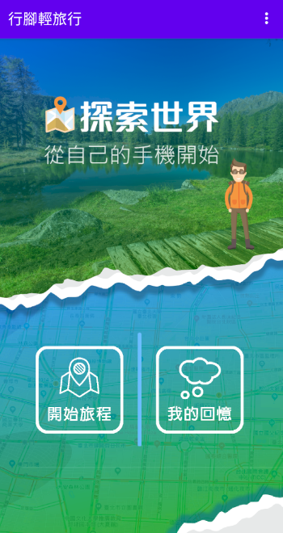
圖：首頁畫面
需先開啟手機的"定位"服務。如未開啟，進入"開始旅程"畫面時，畫面下方會提示使用者需開啟"定位"服務。
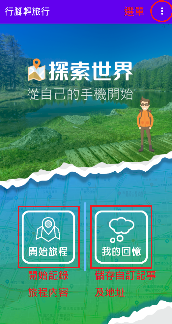
圖：首頁畫面
會先詢問使用者是否授權允許存取這台裝置的位置資訊，請點選"允許"。
進入地圖介面後，會先移動到台北車站。
如果定位有開啟，且定位有取得上一次定位的地理資訊，則會再度移動到上一次定位位置。
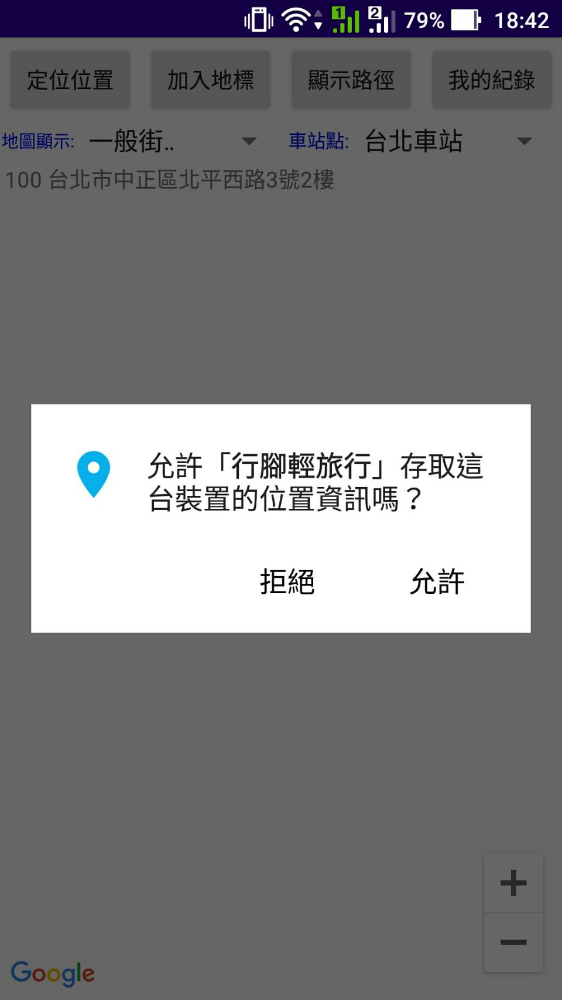
圖：存取位置權限設定
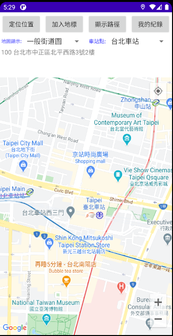
圖：地圖介面
地圖介面說明如圖示：
自訂地圖模式：可選擇一般街道圖、衛星影像地圖、地形圖、混合地圖。
台鐵車站地點：台鐵各縣市各選一個車站顯示。
地標地址資訊欄：會顯示目前地址、座標、時間、速度、定位精準度。
使用方式：第一次開啟時，要先移動位置，讓地標地址資訊欄的內容自己先更新過一次之後，才可以使用上方的"定位位置"及"加入地標"按鈕。
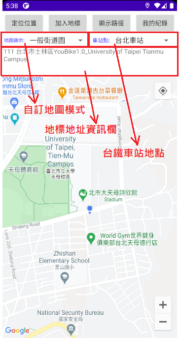
圖：地圖介面
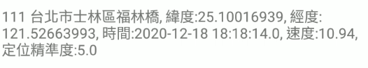
圖：地標地址資訊欄顯示的內容
點選"加入地標"按鈕，會顯示記事頁面，可以編輯"記事標題"、"記事內容"二個欄位，點選"確定編輯"，儲存地點資訊、記事標題、記事內容，回到地圖介面。
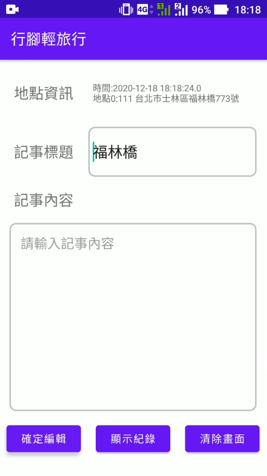
圖：記事頁面
回到地圖介面，會在該地點顯示地標圖示。
多次加入地標後，點選"顯示路徑"按鈕，可以將所有地標連線，並在"地標地址資訊欄"顯示各地標資料。
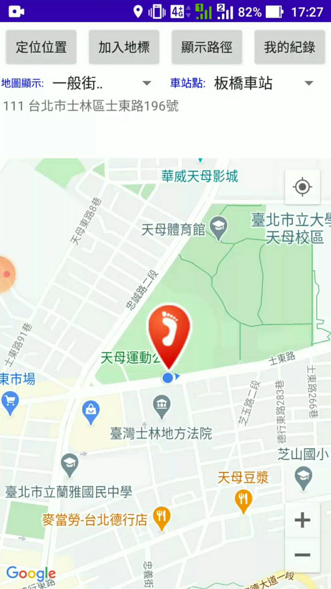
圖：地標圖示
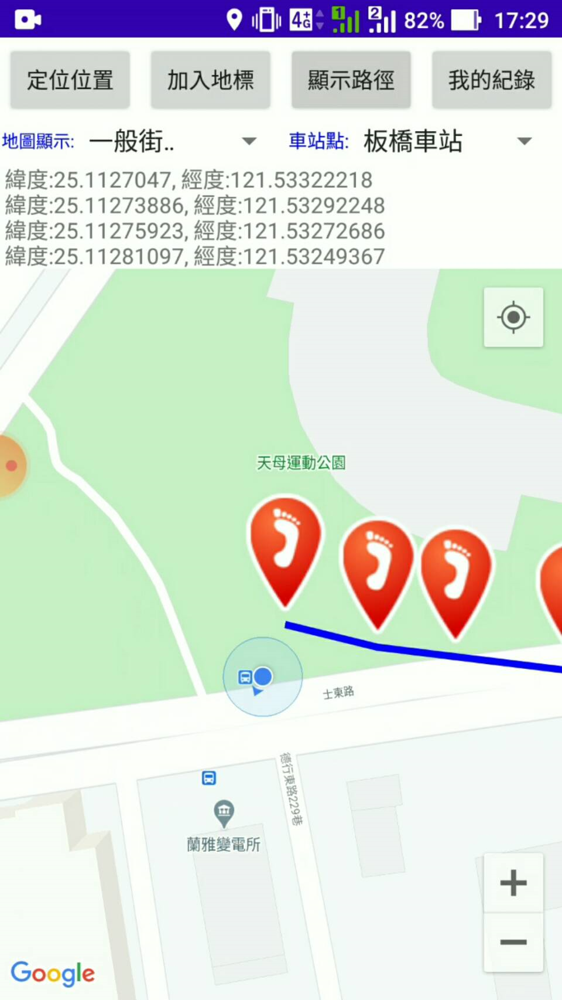
圖：顯示路徑
點選"我的紀錄"按鈕，會顯示記錄頁面，在這裡可以檢視之前所有的地點資訊、記事標題、記事內容資料。
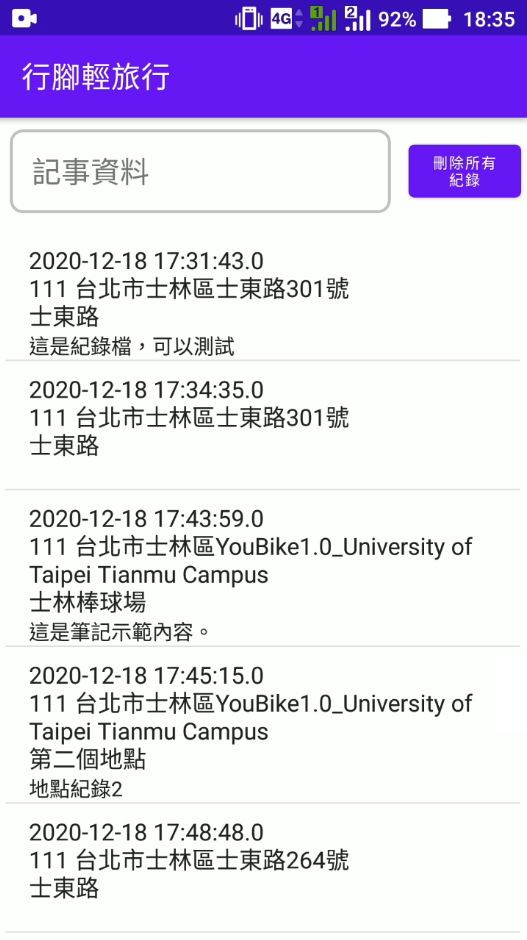
圖：記錄頁面
回到首頁頁面，點選"我的回憶"按鈕，也同樣會顯示記錄頁面，在這裡可以檢視之前所有的地點資訊、記事標題、記事內容資料。
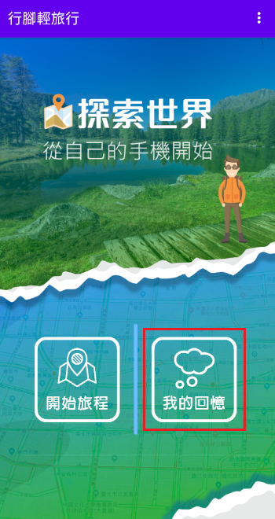
圖：首頁頁面
點選右上角選單，會顯示"設定地圖參數"、"重置所有設定及紀錄"、"關於本程式"、"結束"選項。
設定地圖參數：請見步驟(10)。
重置所有設定及紀錄：會重置地圖參數及刪除所有紀錄。
關於本程式：簡介。
結束：結束本程式。
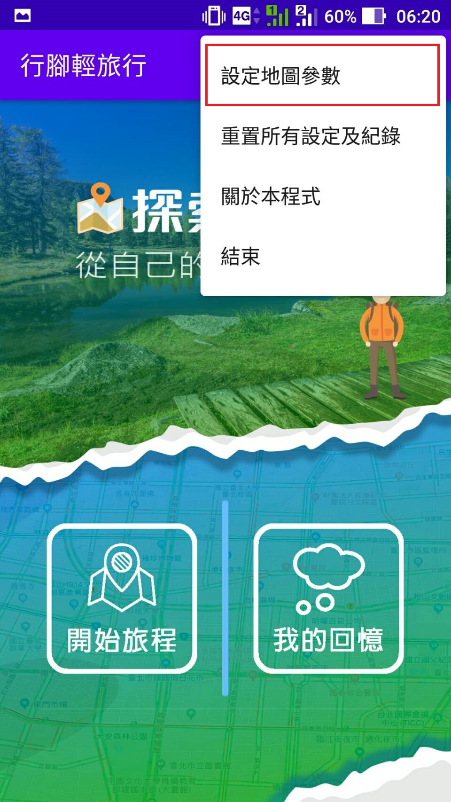
圖：選單
點選"設定地圖參數"選項，會顯示設定頁面，有三個設定參數：
最小定位時間間隔(秒)：設定手機定位更新能取得的最小定位時間間隔，實際使用仍依當時手機的更新時間為準。
最小定位距離(公尺)：設定手機定位更新能取得的最小定位距離，實際使用仍依當時手機更新的最小定位距離為準。
地圖放大倍率：設定範圍由小到大，範圍小地圖會被拉遠，最小值為1，範圍大地圖會被拉近，最大值為21。
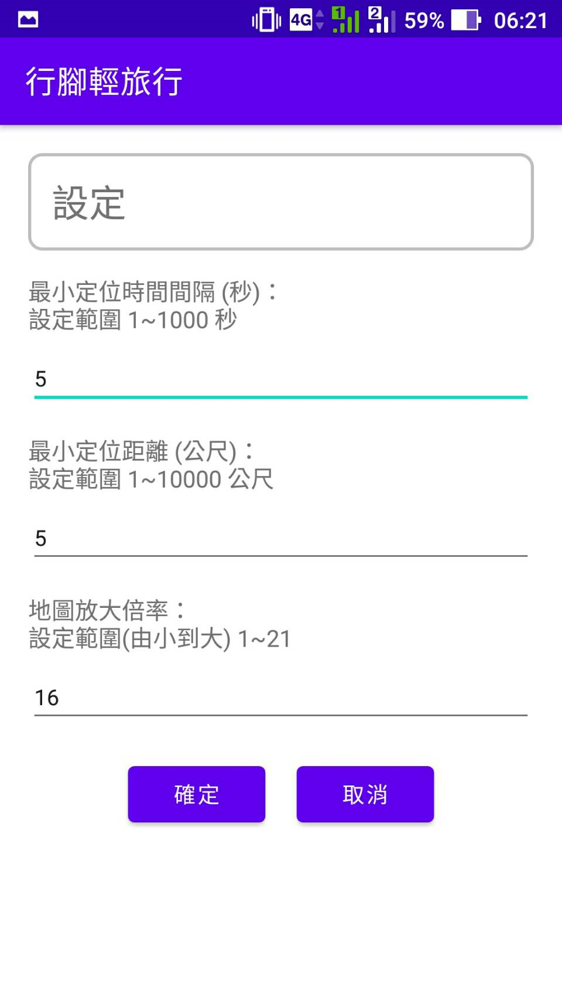
圖：設定頁面